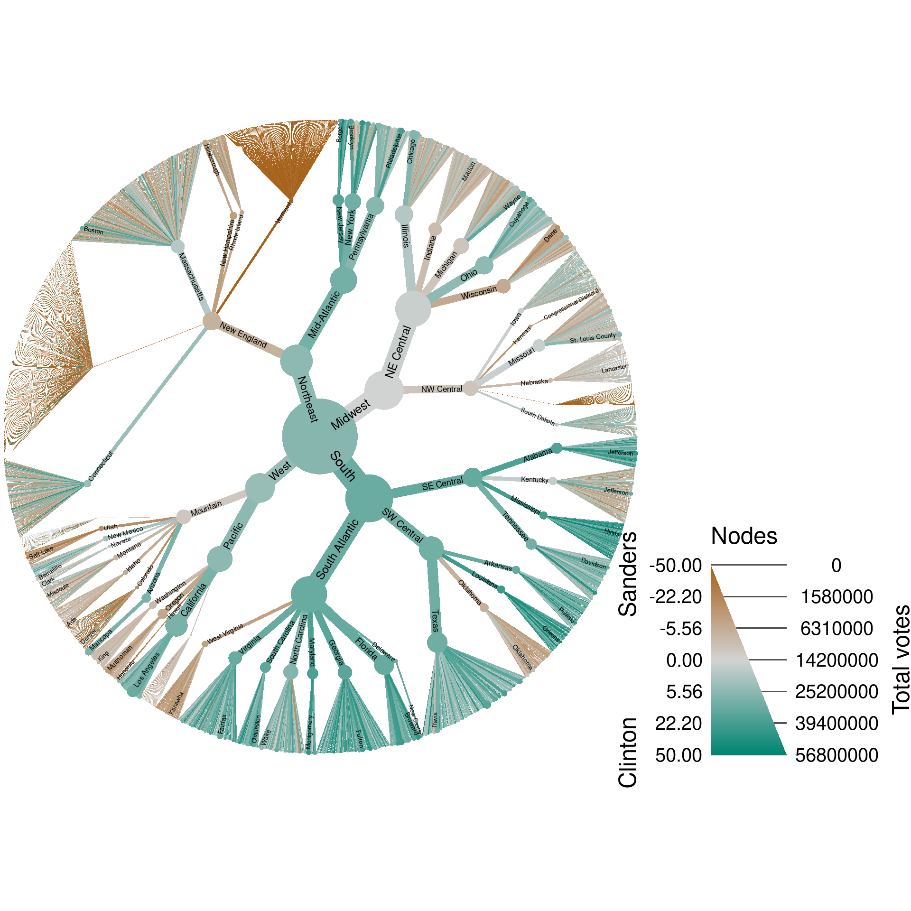

Graphing voting geography
Parameters
Document rendering
Analysis input/output
input_folder <- "raw_input" # Where all the large input files are. Ignored by git.
output_folder <- "results" # Where plots will be saved
output_format <- "pdf" # The file format of saved plots
pub_fig_folder <- "publication"
revision_n <- 1
result_path <- function(name) {
file.path(output_folder, paste0(name, ".", output_format))
}
save_publication_fig <- function(name, figure_number) {
file.path(result_path(name), paste0("revision_", revision_n), paste0("figure_", figure_number, "--", name, ".", output_format))
}Introduction
Although metacoder has been designed for use with taxonomic data, any data that can be assigned to a heirarchy can be used. To demonstrate this, we have used metacoder to display the results of the 2016 Democratic primary election. The data used can be dowloaded here:
Read in data
We will use the readr package to read in the data.
library(readr)
file_path <- file.path(input_folder, "primary_results.csv")
data <- read_csv(file_path)## Parsed with column specification:
## cols(
## state = col_character(),
## state_abbreviation = col_character(),
## county = col_character(),
## fips = col_double(),
## party = col_character(),
## candidate = col_character(),
## votes = col_double(),
## fraction_votes = col_double()
## )print(data)## # A tibble: 24,611 x 8
## state state_abbreviation county fips party candidate votes fraction_votes
## <chr> <chr> <chr> <dbl> <chr> <chr> <dbl> <dbl>
## 1 Alabama AL Autauga 1001. Democrat Bernie Sanders 544. 0.182
## 2 Alabama AL Autauga 1001. Democrat Hillary Clinton 2387. 0.800
## 3 Alabama AL Baldwin 1003. Democrat Bernie Sanders 2694. 0.329
## 4 Alabama AL Baldwin 1003. Democrat Hillary Clinton 5290. 0.647
## 5 Alabama AL Barbour 1005. Democrat Bernie Sanders 222. 0.0780
## 6 Alabama AL Barbour 1005. Democrat Hillary Clinton 2567. 0.906
## 7 Alabama AL Bibb 1007. Democrat Bernie Sanders 246. 0.197
## 8 Alabama AL Bibb 1007. Democrat Hillary Clinton 942. 0.755
## 9 Alabama AL Blount 1009. Democrat Bernie Sanders 395. 0.386
## 10 Alabama AL Blount 1009. Democrat Hillary Clinton 564. 0.551
## # ... with 24,601 more rows
Add region and divisons columns
The data does not include the region or division of states/counties. Adding these will make the visulization more interesting.
divisions <- stack(list("New England" = c("Connecticut", "Maine", "Massachusetts",
"New Hampshire", "Rhode Island", "Vermont"),
"Mid-Atlantic" = c("New Jersey", "New York", "Pennsylvania"),
"NE Central" = c("Illinois", "Indiana", "Michigan", "Ohio", "Wisconsin"),
"NW Central" = c("Iowa", "Kansas", "Minnesota", "Missouri",
"Nebraska", "North Dakota", "South Dakota"),
"South Atlantic" = c("Delaware", "Florida", "Georgia", "Maryland",
"North Carolina", "South Carolina", "Virginia",
"Washington D.C.", "West Virginia"),
"SE Central" = c("Alabama", "Kentucky", "Mississippi", "Tennessee"),
"SW Central" = c("Arkansas", "Louisiana", "Oklahoma", "Texas"),
"Mountain" = c("Arizona", "Colorado", "Idaho", "Montana", "Nevada",
"New Mexico", "Utah", "Wyoming"),
"Pacific" = c("Alaska", "California", "Hawaii", "Oregon", "Washington")))
data$division <- as.character(divisions$ind[match(data$state, divisions$values)])
regions <- stack(list("Northeast" = c("New England", "Mid-Atlantic"),
"Midwest" = c("NE Central", "NW Central"),
"South" = c("South Atlantic", "SE Central", "SW Central"),
"West" = c("Mountain", "Pacific")))
data$region <- as.character(regions$ind[match(data$division, regions$values)])
data$country <- "USA"
print(data)## # A tibble: 24,611 x 11
## state state_abbreviat… county fips party candidate votes fraction_votes division region country
## <chr> <chr> <chr> <dbl> <chr> <chr> <dbl> <dbl> <chr> <chr> <chr>
## 1 Alab… AL Autau… 1001. Demo… Bernie S… 544. 0.182 SE Cent… South USA
## 2 Alab… AL Autau… 1001. Demo… Hillary … 2387. 0.800 SE Cent… South USA
## 3 Alab… AL Baldw… 1003. Demo… Bernie S… 2694. 0.329 SE Cent… South USA
## 4 Alab… AL Baldw… 1003. Demo… Hillary … 5290. 0.647 SE Cent… South USA
## 5 Alab… AL Barbo… 1005. Demo… Bernie S… 222. 0.0780 SE Cent… South USA
## 6 Alab… AL Barbo… 1005. Demo… Hillary … 2567. 0.906 SE Cent… South USA
## 7 Alab… AL Bibb 1007. Demo… Bernie S… 246. 0.197 SE Cent… South USA
## 8 Alab… AL Bibb 1007. Demo… Hillary … 942. 0.755 SE Cent… South USA
## 9 Alab… AL Blount 1009. Demo… Bernie S… 395. 0.386 SE Cent… South USA
## 10 Alab… AL Blount 1009. Demo… Hillary … 564. 0.551 SE Cent… South USA
## # ... with 24,601 more rows
Create and parse classifications
The code below creates a single column in the data set that contains all of the levels of the geographic hierarchy for each location. It is then parsed using parse_taxonomy_table so that the other columns are preserved in the taxmap object.
library(metacoder)
voting_data <- parse_tax_data(data, class_cols = c("country", "region", "division", "state", "county"))
print(voting_data)## <Taxmap>
## 4279 taxa: aab. USA, aac. South ... gio. Teton-Sublette, gip. Uinta-Lincoln
## 4279 edges: NA->aab, aab->aac, aab->aad, aab->aae ... acl->gin, acl->gio, acl->gip
## 1 data sets:
## tax_data:
## # A tibble: 24,611 x 12
## taxon_id state state_abbreviat… county fips party candidate votes fraction_votes
## <chr> <chr> <chr> <chr> <dbl> <chr> <chr> <dbl> <dbl>
## 1 acm Alab… AL Autau… 1001. Demo… Bernie S… 544. 0.182
## 2 acm Alab… AL Autau… 1001. Demo… Hillary … 2387. 0.800
## 3 acn Alab… AL Baldw… 1003. Demo… Bernie S… 2694. 0.329
## # ... with 2.461e+04 more rows, and 3 more variables: division <chr>, region <chr>,
## # country <chr>
## 0 functions:
Get canidate vote counts
We have now need to sum the data for geographic region.
voting_data <- mutate_obs(voting_data, data = "place_data",
taxon_id = taxon_ids,
total_votes = unlist(obs_apply(voting_data, "tax_data", sum, value = "votes")),
clinton_votes = sapply(obs(voting_data, "tax_data"),
function(i) {
subset <- voting_data$data$tax_data[i, ]
sum(subset$votes[subset$candidate == "Hillary Clinton"])
}),
sanders_votes = sapply(obs(voting_data, "tax_data"),
function(i) {
subset <- voting_data$data$tax_data[i, ]
sum(subset$votes[subset$candidate == "Bernie Sanders"])
})
)## Adding a new 4279 x 4 table called "place_data"Get top counties
I will get a list of the “taxon” IDs for the county in each state with the most votes.
top_counties <- unlist(subtaxa_apply(voting_data, subset = n_supertaxa == 3, value = "votes",
function(x) names(x[which.max(x)])))Plotting results
voting_data %>%
heat_tree(node_size = total_votes,
node_size_range = c(0.0002, 0.06),
node_color = (clinton_votes - sanders_votes) / total_votes * 100,
edge_label = ifelse(taxon_ids %in% top_counties | n_supertaxa <= 3, taxon_names, ""),
edge_label_size_trans = "area",
edge_label_size_range = c(0.008, 0.025),
node_color_range = c("#a6611a", "lightgray", "#018571"),
node_color_interval = c(-50, 50),
edge_color_range = c("#a6611a", "lightgray", "#018571"),
edge_color_interval = c(-50, 50),
node_color_axis_label = "Clinton Sanders",
node_size_axis_label = "Total votes",
repel_labels = FALSE,
output_file = result_path("voting"))
Software and packages used
sessionInfo()## R version 3.4.4 (2018-03-15)
## Platform: x86_64-pc-linux-gnu (64-bit)
## Running under: Ubuntu 16.04.5 LTS
##
## Matrix products: default
## BLAS: /usr/lib/libblas/libblas.so.3.6.0
## LAPACK: /usr/lib/lapack/liblapack.so.3.6.0
##
## locale:
## [1] LC_CTYPE=en_US.UTF-8 LC_NUMERIC=C LC_TIME=en_US.UTF-8
## [4] LC_COLLATE=en_US.UTF-8 LC_MONETARY=en_US.UTF-8 LC_MESSAGES=en_US.UTF-8
## [7] LC_PAPER=en_US.UTF-8 LC_NAME=C LC_ADDRESS=C
## [10] LC_TELEPHONE=C LC_MEASUREMENT=en_US.UTF-8 LC_IDENTIFICATION=C
##
## attached base packages:
## [1] stats graphics grDevices utils datasets methods base
##
## other attached packages:
## [1] readr_1.2.0 metacoder_0.2.1.9011 taxa_0.3.1 stringr_1.3.1
## [5] glossary_0.1.0 knitcitations_1.0.8 knitr_1.20
##
## loaded via a namespace (and not attached):
## [1] Rcpp_0.12.18 compiler_3.4.4 pillar_1.2.1 plyr_1.8.4 bindr_0.1.1
## [6] tools_3.4.4 ggfittext_0.6.0 digest_0.6.15 gtable_0.2.0 lubridate_1.7.4
## [11] jsonlite_1.5 evaluate_0.10.1 tibble_1.4.2 pkgconfig_2.0.1 rlang_0.2.2
## [16] igraph_1.2.2 bibtex_0.4.2 cli_1.0.0 yaml_2.1.18 bindrcpp_0.2.2
## [21] RefManageR_1.2.0 dplyr_0.7.6 httr_1.3.1 xml2_1.2.0 hms_0.4.2.9001
## [26] grid_3.4.4 rprojroot_1.3-2 tidyselect_0.2.4 glue_1.3.0 R6_2.2.2
## [31] fansi_0.2.3 rmarkdown_1.9 ggplot2_3.0.0 reshape2_1.4.3 purrr_0.2.5
## [36] magrittr_1.5 scales_1.0.0 backports_1.1.2 htmltools_0.3.6 assertthat_0.2.0
## [41] colorspace_1.3-2 labeling_0.3 utf8_1.1.3 stringi_1.2.4 munsell_0.5.0
## [46] lazyeval_0.2.1 crayon_1.3.4